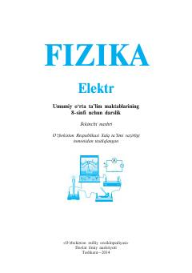

F88-sinf o'quvchilari uchun elektr hodisalari va elektr maydon asoslari haqidagi darslik.
Ushbu darslik umumiy o'rta ta'lim maktablarining 8-sinf o'quvchilari uchun mo'ljallangan bo'lib, elektr hodisalari, elektr zaryadi va elektr maydon asoslarini qamrab oladi. Kitobda elektr energiyasini ishlab chiqarish, uzatish va elektr asboblarining ishlash prinsiplari ilmiy va amaliy jihatdan tushuntirilgan.